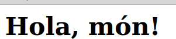

Repàs Docker
En aquesta unitat farem un repàs de la tecnologia de contenidors, les imatges i el funcionament bàsic de Docker. Aquesta unitat és un repàs dels coneixements que ja hauríem d'haver adquirit en cursos anteriors, per la qual cosa no entrarem en massa detall. Si voleu aprofundir més en el tema, podeu consultar la documentació oficial de Docker a https://docs.docker.com/get-started.
Treballarem amb Docker en un entorn Linux, encara que també està disponible per a Windows i MacOS. Si treballeu en un altre Sistema Operatiu que no siga Linux podeu utilitzar Docker Desktop, que és una aplicació que permet utilitzar Docker en Windows i MacOS. Podeu descarregar-la des de https://www.docker.com/products/docker-desktop.
Contenidors
Un contenidor és una unitat d'execució lleugera que inclou tot el necessari per a executar una aplicació. Amb els contenidors podem empaquetar i distribuir aplicacions juntament amb les seves dependències. Els contenidors són una eina molt útil per a desplegar aplicacions de forma ràpida i eficient.Això ens permetrà tenir un entorn de desenvolupament idèntic a l'entorn de producció.
Podríem dir que el contenidor és també una tecnologia de virtualització. A diferència d’una màquina virtual, el contenidor utilitza el sistema base de la màquina anfitriona i actua com un entorn privat que comparteix recursos amb el sistema anfitrió sense necessitat de virtualitzar tot el hardware.
Avantatges de l'ús de contenidors
-
La flexibilitat. Els contenidors són lleugers i portables, i poden ser executats en qualsevol lloc. Fins i tot les aplicacions més complexes poden incloure's als contenidors.
-
La consistència. Els contenidors asseguren que les aplicacions funcionen de la mateixa manera en qualsevol entorn.
-
La eficiència. Els contenidors permeten als desenvolupadors empaquetar i distribuir aplicacions juntament amb les seves dependències.
-
La portabilitat. Els contenidors poden ser desplegats i executats en qualsevol lloc, ja siga en un entorn local, en el núvol o en un centre de dades.
-
La seguretat. Els contenidors ofereixen un entorn segur per a executar aplicacions.
-
L'escalabilitat. Els contenidors permeten escalar aplicacions de forma ràpida i eficient.
-
La poca càrrega que suposen per al sistema, al compartir el mateix kernel que el sistema anfitrió.
-
La possibilitat d'actualitzar "en calent". És a dir, sense haver de parar el servei.
Imatges
Una imatge és un paquet que conté tot el necessari per a executar una aplicació, incloent l'entorn d'execució, el codi, les llibreries, les dependències, les dades i la configuració (variables d'entorn, fitxers, etc.) Les imatges són immutables, és a dir, no es poden modificar. Per a modificar una imatge, cal crear una nova imatge a partir de l’original.
Imatges i contenidors
Un contenidor és una instància d'una imatge. Si una imatge conté tot el necessari per a executar una aplicació, el contenidor seria com una instància d'eixa aplicació en execució. Una imatge és un arxiu de només lectura que conté un conjunt de capes que són utilitzades per a crear un sistema de fitxers. Més endavant veurem com crear imatges, com utilitzar imatges ja creades, i sobretot com utilitzar-les per a crear contenidors.
Docker
Docker és una plataforma de codi obert que permet automatitzar el desplegament d'aplicacions dins de contenidors. Docker permet als desenvolupadors empaquetar, enviar i executar aplicacions com contenidors. Això permet, com hem comentat abans, simular un entorn de producció sense haver de modificar ni configurar el nostre sistema operatiu anfitrió.

Bàsicament, el que aconsegueix Docker és oferir contenidors d'aplicacions que aprofiten les capacitats de virtualització del sistema amfitrió per poder executar processos i serveis de forma aïllada. Es tracta d'un concepte paregut al de màquina virtual, però que no requerix d'un sistema operatiu. En Linux, per exemple, Docker fa ús de les característiques d'aïllament de recursos (CPU, memòria, xarxa...) del nucli del sistema, tals com els cgroups i els namespaces, de manera que podem tindre diversos contenidors compartint el mateix kernel de Linux, però cadascun amb restriccions d'accés a determinats recursos. Així, contenidors independents s'executen dins una mateixa instància de Linux, evitant la sobrecàrrega d'iniciar i mantenir màquines virtuals (on cada màquina conté tot el necessari per a fer anar un sistema operatiu complet).
Instal·lació de Docker en Linux
Per a instal·lar Docker en una distribució Linux, cal seguir els següents passos:
- Actualitzar la llista de paquets disponible el sistema:
sudo apt-get update
- Instal·lar els paquets necessaris per a que el sistema puga descarregar paquets a través de HTTPS:
sudo apt-get install apt-transport-https ca-certificates curl software-properties-common
- Afegir la clau GPG oficial de Docker:
sudo install -m 0755 -d /etc/apt/keyrings
sudo curl -fsSL https://download.docker.com/linux/ubuntu/gpg -o /etc/apt/keyrings/docker.asc
sudo chmod a+r /etc/apt/keyrings/docker.asc
- Afegir el repositori de Docker a la llista de repositoris del sistema:
echo "deb [signed-by=/etc/apt/keyrings/docker.asc] https://download.docker.com/linux/ubuntu $(lsb_release -cs) stable" | sudo tee /etc/apt/sources.list.d/docker.list > /dev/null
- Actualitzar la llista de paquets disponible el sistema:
sudo apt-get update
- Instal·lar la versió comunitària de Docker:
sudo apt-get install docker-ce docker-ce-cli containerd.io docker-buildx-plugin docker-compose-plugin
- Comprovar que Docker s'ha instal·lat correctament:
sudo docker --version
sudo docker run hello-world
En teoria ens hauria d'aparèixer un missatge com el següent:
$ sudo docker run hello-world
Unable to find image 'hello-world:latest' locally
latest: Pulling from library/hello-world
d1725b59e92d: Pull complete
Digest: sha256:0add3ace90ecb4adbf7777e9aacf18357296e799f81cabc9fde470971e499788
Status: Downloaded newer image for hello-world:latest
Hello from Docker!
This message shows that your installation appears to be working correctly.
To generate this message, Docker took the following steps:
1. The Docker client contacted the Docker daemon.
2. The Docker daemon pulled the "hello-world" image from the Docker Hub.
(amd64)
3. The Docker daemon created a new container from that image which runs the
executable that produces the output you are currently reading.
4. The Docker daemon streamed that output to the Docker client, which sent it
to your terminal.
To try something more ambitious, you can run an Ubuntu container with:
$ docker run -it ubuntu bash
Share images, automate workflows, and more with a free Docker ID:
https://hub.docker.com/
For more examples and ideas, visit:
https://docs.docker.com/get-started/
Com veiem, l'execució de docker s'ha realitzat com a sudo. Si volem utilitzar docker per a altres usuaris, només haurem de crear un grup docker (o comprovar si ja existeix) i afegir ahi els usuaris que el puguen utilitzar.
Per altra banda, veiem com utilitzar docker per tal de llançar una imatge: docker run. En aquest cas, una imatge de prova anomenada hello-world.
Com veiem, ens indica que no troba la imatge 'hello-world:latest' en local, pel que la descarrega de la llibrería (pull). Una vegada descarregada ja ens mostra el missatge que comença amb "Hello from Docker", corresponent a aquesta imatge.
Si tornem a llançar l'ordre, comprovarem com ja no realitza la descàrrega sinò que executa directament la imatge Hello World.
Si no voleu fer sudo cada vegada, podeu afegir-vos al grup docker fent
sudo usermod -aG docker $USER. Si treballeu amb els ordinadors del centre, ja esteu afegits al grup.
Docker i serveis
El dimoni (daemon) de Docker és el servei que gestiona la creació, execució i distribució de contenidors. L'ordre docker que hem vist anteriorment, és el client de docker, que permet a l'usuari interactuar amb el sistema, encara que també hi ha altres aplicacions clints.
Si volem que el servei de Docker s'inicie en arrancar el sistema (systemd), farem:
sudo systemctl enable docker
I si volem llevar-lo de l'inici:
sudo systemctl disable docker
Podem trobar més informació sobre tot el que podem fer després d'haver instal·lat Docker en: https://docs.docker.com/install/linux/linux-postinstall/#configure-docker-to-start-on-boot, així com documentació per a la configuració del servei de Docker per a que escolte determinats ports mitjançant el fitxer /etc/docker/daemon.json: https://docs.docker.com/install/linux/linux-postinstall/#configure-where-the-docker-daemon-listens-for-connections
Comandes bàsiques de Docker
A continuació, veurem algunes de les comandes bàsiques de Docker:
docker run: Llança un contenidor a partir d'una imatge, tal com acabem de veure.docker create: Crea un contenidor a partir d'una imatge, però no l'executa.docker ps: Mostra els contenidors en execució.docker ps -a: Mostra tots els contenidors, tant els que estan en execució com els que no.docker images: Mostra les imatges disponibles en el sistema.docker pull: Descarrega una imatge de Docker Hub sense crear cap contenidordocker push: Puja una imatge a Docker Hub.docker rmi: Elimina una imatge.docker rm: Elimina un contenidor.docker start: Inicia un contenidor. Si el contenidor ja existeix, faremdocker start, nodocker runcada vegadadocker stop: Para un contenidor.docker restart: Reinicia un contenidor.docker exec: Executa una comanda en un contenidor en execució.docker logs: Mostra els logs d'un contenidor.docker inspect: Mostra informació detallada d'un contenidor o imatge.docker cp: Copia fitxers entre el sistema local i un contenidor.docker commit: Crea una nova imatge a partir d'un contenidor en execució.docker build: Construeix una imatge a partir d'un fitxer Dockerfile.docker-network: Permet posar contenidors en xarxa.docker-attach: Permet connectar-se a un contenidor en execució i veure en el nostre terminal el que es mostra en el terminal del contenidor.
Exemple: anem a vore com descarregar i llançar una imatge per a Docker de Busybox. Busybox no és més que una utilitat que combina moltes eines estàndards d'Unix i ordres de Linux en un sol fitxer.
# docker pull busybox
Using default tag: latest
latest: Pulling from library/busybox
8c5a7da1afbc: Pull complete
Digest: sha256:cb63aa0641a885f54de20f61d152187419e8f6b159ed11a251a09d115fdff9bd
Status: Downloaded newer image for busybox:latest
Amb açò hem descarregat la imatge de busybox pe a Docker des del Docker Hub (https://hub.docker.com/explore/).
Si volem comprovar que l'hem descarregat, podem executar docker images, que ens mostra les imatges que tenim baixades:
# docker images
REPOSITORY TAG IMAGE ID CREATED SIZE
hello-world latest 4ab4c602aa5e 3 weeks ago 1.84kB
busybox latest e1ddd7948a1c 2 months ago 1.16MB
Ara anem a executar el contenidor amb docker run:
# docker run busybox
Dos coses que podem veure: com que a tenim descarregada la imatge, no la torna a descarregar. Amb la imatge de busybox al sistema, Docker la busca, la carrega en un contenidor i executa al busybox les ordres que li passem.
Segona cosa: com que en aquest cas no li hem passat cap ordre, aparentment, no farà res.
Ara anem a executar una instrucció dins del contenidor:
# docker run busybox echo "Hola món!"
Hola món!
O també:
# docker run busybox ls
bin
dev
etc
home
proc
root
sys
tmp
usr
var
O fins i tot veure l'arxiu d'usuaris:
# docker run busybox cat /etc/passwd
root:x:0:0:root:/root:/bin/sh
daemon:x:1:1:daemon:/usr/sbin:/bin/false
bin:x:2:2:bin:/bin:/bin/false
sys:x:3:3:sys:/dev:/bin/false
sync:x:4:100:sync:/bin:/bin/sync
mail:x:8:8:mail:/var/spool/mail:/bin/false
www-data:x:33:33:www-data:/var/www:/bin/false
operator:x:37:37:Operator:/var:/bin/false
nobody:x:65534:65534:nobody:/home:/bin/false
Per veure els contenidors que tenim en execució, podem utilitzar docker ps:
# docker ps
CONTAINER ID IMAGE COMMAND CREATED STATUS PORTS NAMES
d4018e11cc64 busybox "sleep 10" 5 seconds ago Up 4 seconds elegant_keldysh
Si executem l'ordre sh dins del contenidor, podem interactuar amb ell:
# docker exec -it d4018e11cc64 sh
/ # ls
bin dev etc home proc root sys tmp usr var
/ # exit
amb
docker run -it imatgeel contenidor se crea a partir de la imatge, se queda en funcionament i no se tancaamb
docker run -it -rm imatgeel contenidor se crea, se queda en funcionament i quan el tanquem, se borra
Amb l'opció -a de docker ps podem obtindre tots els contenidors que s'han creat en la sessió actual:
# docker ps -a
CONTAINER ID IMAGE COMMAND CREATED STATUS
5dde99182cec busybox "sh" 2 minutes ago Exited (0) 2 minutes ago festive_ride
d4018e11cc64 busybox "sleep 10" 16 minutes ago Exited (0) 16 minutes ago elegant_keldysh
2a2b08d458c5 busybox "ps aux" 20 minutes ago Exited (0) 19 minutes ago
b17136bc9389 busybox "cat /etc/passwd" 22 minutes ago Exited (0) 22 minutes ago gifted_archimedes
a475a7587143 busybox "ls" 23 minutes ago Exited (0) 23 minutes ago jovial_leavitt
1febe609a9a9 busybox "echo hola" 23 minutes ago Exited (0) 23 minutes ago compassionate_spence
dc64b0307514 busybox "sh" 25 minutes ago Exited (0) 24 minutes ago clever_lalande
2a4808f37627 hello-world "/hello" About an hour ago Exited (0) About an hour ago nostalgic_stallman
31545996cff7 hello-world "/hello" About an hour ago Exited (0) About an hour ago
Per a eliminar un contenidor, farem servir docker rm:
# docker rm 5dde99182cec
5dde99182cec
I per a eliminar una imatge, farem servir docker rmi:
# docker rmi busybox
Untagged: busybox:latest
Untagged: busybox@sha256:cb63aa0641a885f54de20f61d152187419e8f6b159ed11a251a09d115fdff9bd
Deleted: sha256:e1ddd7948a1c1e0b0c6b4f3b3d1f0e3f3b3b1f1b4a7d1b3b1b3b1b3b1b3b1b3b1
Deleted: sha256:8c5a7da1afbc
Dockerfile
Hem vist com descarregar imatges i crear contenidors a partir d'elles. I si volem crear les nostres pròpies imatges, o ampliar imatges que ja existeixen? Per a açò, farem servir un fitxer anomenat Dockerfile i la instrucció docker build.
Un Dockerfile és un fitxer de text que conté una sèrie d'instruccions que Docker ha d'executar per a crear una imatge. Aquestes instruccions són molt senzilles i permeten crear imatges personalitzades a partir d'imatges existents.
Avantatges de crear imatges a partir d'un Dockerfile:
-
Podrem reproduir la imatge fàcilment ja que al Dockerfile tenim totes i cadascuna de les ordres necessàries per a la construcció de la imatge.
-
Podrem configurar el procés que s'executarà per defecte als contenidors creats a partir de la nova imatge. Si volem canviar la imatge de base, això és extremadament senzill amb un Dockerfile.
Les principals instruccions que podem trobar en un Dockerfile són:
FROM: Indica la imatge de base a partir de la qual es crearà la nova imatge.RUN: Executa una instrucció en el sistema de fitxers de la imatge.COPY: Copia fitxers des del sistema local a la imatge.ADD: Similar a COPY, però permet copiar fitxers des d'una URL.CMD: Especifica la comanda que s'executarà per defecte en els contenidors creats a partir de la imatge.ENTRYPOINT: Especifica la comanda que s'executarà quan es llance el contenidor amb docker runEXPOSE: Indica els ports que s'han d'exposar quan es llance el contenidor.VOLUME: Indica els volums que s'han de crear quan es llance el contenidor.WORKDIR: Indica el directori de treball per defecte.ENV: Defineix variables d'entorn.ARG: Defineix variables que es poden passar a la imatge en el moment de la construcció.LABEL: Afegeix metadades a la imatge.USER: Indica l'usuari que s'ha d'utilitzar per a executar les ordres.
Per exemple, anem a veure com serie més o menys un Dockerfile per a crear una imatge de node-red:
FROM nodered/node-red
# Copy package.json to the WORKDIR so npm builds all
# of your added nodes modules for Node-RED
COPY package.json .
RUN npm install --unsafe-perm --no-update-notifier --no-fund --only=production
# Copy _your_ Node-RED project files into place
# NOTE: This will only work if you DO NOT later mount /data as an external volume.
# If you need to use an external volume for persistence then
# copy your settings and flows files to that volume instead.
COPY settings.js /data/settings.js
COPY flows_cred.json /data/flows_cred.json
COPY flows.json /data/flows.json
# Expose the listening port of Node-RED
EXPOSE 1880
Amb docker build, crearem la imatge a partir del Dockerfile:
docker build -t node-red .
I amb docker run, llançarem el contenidor:
docker run -d -p 1880:1880 --name mynodered node-red
Qué significa -d i -p?
-d significa que el contenidor s'executarà en segon pla, és a dir, en background. -p significa que el port 1880 del contenidor es mapejarà al port 1880 de la màquina host.
Podem provar si funciona accedint desde la URL a http://localhost:1880.
Volums
Si eliminem un contenidor o el tornem a crear amb la mateixa imatge, perdrem totes les dades que hàgim creat dins del contenidor. Per a evitar açò, farem servir volums.
Un volum és un directori que es pot compartir entre contenidors i amb el sistema host. Els volums són una eina molt útil per a persistir dades i compartir-les entre contenidors.
En Linux els volums se guarden a /var/lib/docker/volumes. Els volums se solen utilitzar en els casos següents:
- Per compartir dades entre contenidors. Simplement hauran de fer servir el mateix volum.
- Per a còpies de seguretat ja sigui perquè siguin usades posteriorment per altres contenidors o per moure aquests volums a altres hosts.
- Quan vull emmagatzemar les dades del meu contenidor en el sistema amfitrió o fins i tot en un proveïdor cloud.
Per a gestionar volums tenim les següents comandes:
docker volume create: Crea un volum amb el nom que indiquemdocker volume ls: Llista els volums disponiblesdocker volume inspect: Mostra informació detallada d'un volumdocker volume rm: Elimina un volumdocker volume prune: Elimina tots els volums no utilitzats
Anem a veure un xicotet exemple de com fer servir volums creant un miniservidor Apache:
- Primer creem el volum
docker volume create miweb
Ara creem un contenidor amb un servidor apache, montant el volum:
$ docker run -d --name my-apache-app --mount type=volume,src=miweb,dst=/usr/local/apache2/htdocs -p 8080:80 httpd:2.4
Amb açò, hem creat un contenidor amb un servidor Apache que servirà el contingut del volum miweb en el port 8080 de la màquina host. El paràmetre dst indica el directori on es muntarà el volum dins del contenidor.
Anem a crear un fitxer HTML dins del volum:
$ docker exec my-apache-app bash -c 'echo "<html><head><meta charset=\"UTF-8\"></head><body><h1>Hola, món!</h1></body></html>" > /usr/local/apache2/htdocs/index.html'
Ara podem accedir a la nostra web a través de la URL http://localhost:8080 i veure què mostra.

Si ara eliminem el contenidor amb docker rm -f my-apache-app, el volum no es veurà afectat encara que ara localhost:8080 mostrarà un error perquè no hi ha cap Apache en funcionament.
Anem a crear un altre contenidor i muntar el mateix volum, encara que ara utilitzarem l'opció -v:
$ docker run -d --name my-apache-app -v miweb:/usr/local/apache2/htdocs -p 8080:80 httpd:2.4
Com podeu comprovar, sense tornar a crear l'arxiu index.html, la web ja està disponible a http://localhost:8080.